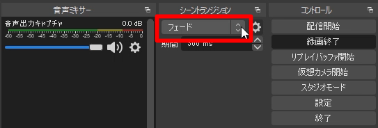
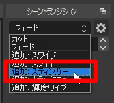
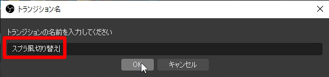
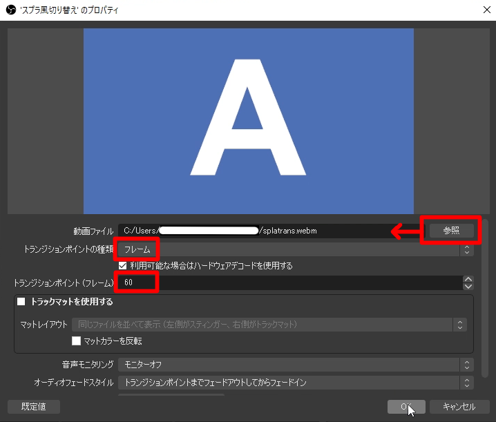

OBS Studioのスプラ風トランジション
導入手順
ダウンロード
素材はここからダウンロードしてください。素材はzipで圧縮されているので、中身のファイルを適当な場所に展開しましょう。すると「splatrans.webm」と「splatrans_no_sound.avi」という二つの動画ファイルが出てきます。_no_soundとついているほうが無音で、もう一方は効果音ありです。OBS Studioの設定
「シーントランジション」のメニューをクリックで開きます。デフォルトだと「フェード」になっている部分です。
「追加: スティンガー」をクリックします。
好きな名前を付けてOKをクリックします。ここでは「スプラ風切り替え」としてみました。
「参照」で動画ファイルの場所を指定し、「トランジションポイントの設定」は「フレーム」、「トランジションポイント（フレーム）」は「60」にします。これでOKをクリック。
これでもう準備完了です。シーンを適当に切り替えてみてください。